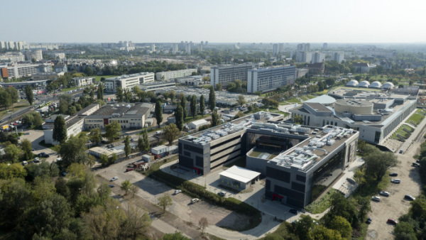
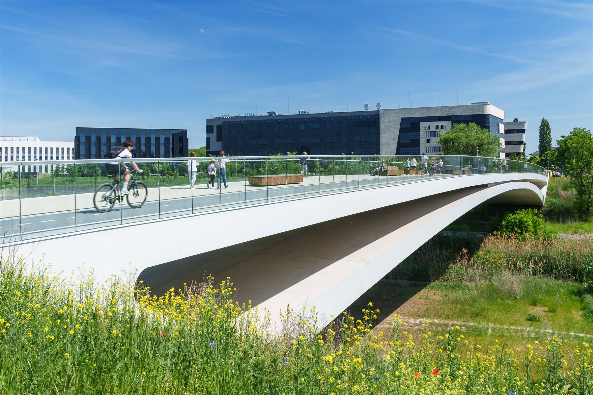

Poznan University of Technology
Poznan University of Technology grew out of the State School of Mechanical Engineering established in 1919. Today, PUT is one of Poland’s leading technical universities and an important academic landmark of Poznan and the wider region.
The university consists of nine faculties and provides education for nearly 17 thousand students. It offers Bachelor, Master and Doctorate courses in Polish and English, as well as postgraduate courses and workshops for people who want to update their technical knowledge.
Science for people
Technological development at PUT is connected with respect for human beings, protection of the natural environment and sustainable economic development.
Practical experience
The university links modern scientific disciplines with knowledge transfer and practical engineering applications.
Close relationship with business
Cooperation with business partners helps PUT adapt educational programmes to market needs and strengthen its academic position.

